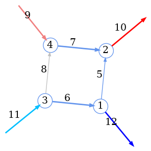

Whilst we have almost no hope to detect any GW scattering events with current experimental apparatuses, the scattering formalism can still be very useful in the quest for orbital waveforms. Most importantly, while experimental data has not been driving gravitational scattering theory, the interplay between particle scattering experiment and theory have been an enormously fruitful endeavor for the understanding of fundamental interactions in High Energy Physics (HEP) The back and forth between precise measurements (such as those conducted at the Large Hadron Collider (LHC) ) and precise predictions for particle scattering, has pushed the boundaries of the calculations possible. It would be therefore very beneficial if one could apply the large knowledge acquired for small non-gravitationally interacting particles, to large compact orbiting bodies. We will see that it is indeed the case.
Such techniques including EFT double copy, generalized unitarity, Integration by Parts (IBP) reduction, differential equations methods, developed in the context of perturbative computations of collider observables now find an application to the scattering problem in gravity. A key part of applying tools originally developed for quantum systems to problems in gravity is controlling the classical limit, a historically difficult endeavor. Once scattering data is obtained, one needs to extract the relevant observables. This may be in an effort to compare results from the different methods, in which case gauge and diffeomorphism, and Lorentz invariance are key, since different methods make different gauge and frame choices. It can also be to extract the relevant information for detection and data extraction, in which case the GW waveform is the relevant observable. In the latter case one is mostly interested in the orbital waveform, and thus a map from unbound to bound orbits is necessary.
Multiple formalisms have arisen to map the scattering problem to an orbital one, and the quantum formalism to a classical one. One key way is to map scattering data to a potential (as present in a Hamiltonian for example). In fact this has been developped as early as the 1970s in (Hiida and Okamura 1972; Iwasaki 1971). Further developments happened in (Neill and Rothstein 2013; Bjerrum-Bohr, Donoghue, and Vanhove 2014; Vaidya 2015; Cachazo and Guevara 2020; Guevara 2019; Damour 2016). Here we will follow the treatment in (Cheung, Rothstein, and Solon Cheung, Rothstein, and Solon 2018), where the conservative part of such scattering amplitudes is matched to an EFT and subsequently to mapped to a potential. Recent efforts to add dissipative effects have also been successful (see Kälin, Neef, and Porto 2022). This potential can then be used as input to the EOB formalism. Furthermore, (Kalin and Porto Kalin and Porto 2020a, 2020b), have shown a path forward in directly extending unbound data to bound orbits, obviating the need to use a potential and EOB at all.
Finally, as mentioned in the last chapter, scattering can stand on its own and still be useful without being extended to the orbital case. The PM approximation can be computed from scattering amplitudes in an EFT framework (Kälin and Porto 2020). We can also explore the classical observables possible in scattering scenarios. This has been developed in Kosower, Maybee, and O’Connell (2019) and was extended to local observables 1 such as waveforms in Cristofoli et al. (2022).
1 local as in not time integrated and thus presenting time dependent dynamics
In this chapter we will first look at how to use amplitude data to extract orbital and scattering waveforms. We will then look at the KMOC formalism to directly extract observables. Finally, we will look at how to compute amplitudes, and comparing to results such as those in (Kosower, Maybee, and O’Connell 2019; Zvi Bern et al. 2022).
5.1 Scattering amplitudes
In Quantum Field Theory (QFT) to date the only way to encode scattering data is through a scattering amplitude. Consider a process where one starts out with a set of particles described by a state \(\vert i \rangle_{\text{}}\), that interact, and yield a final state \(\vert f \rangle_{\text{}}\). The scattering amplitude is then defined as the probability amplitude for this process to occur. It is simply given by \[\langle i \vert S-1 \vert f \rangle=(2\pi)^4 \delta^{{(4)}}(p_f-p_i)\mathring{\imath}\mathcal{A}^{}_{fi},\]
where \(S\) is the S-matrix, encoding asymptotic time evolution, \(S=U_t(-\infty,+\infty)\). We subtract the identity from it, forming what some call the transfer matrix \(T\), as we only are interested in processes where something happens (i.e. not everything stays the same). In the above equation we also define the scattering matrix element\(\mathcal{A}^{}_{fi}\)(see Srednicki 2007, 76) or invariant Feynman amplitude(see Coleman 2018, 214), by factoring out a normalized spacetime delta-function that impose the conservation of momentum on the external particles, and a complex unit. The computation of \(\mathcal{A}^{}\) is made possible by the Lehmann Symanzik and Zimmermann (LSZ) (Lehmann, Symanzik, and Zimmermann 1955; Collins 2019) formalism, which relates \(\mathcal{A}^{}_{fi}\) to time-ordered correlation functions (also known as Green’s functions) of the given QFT. Green’s functions, can be expanded as an infinite sum of diagrams, weighted by a small coupling. The diagrams encode integrals that are obtained by applying Feynman rules which can be readily extracted from an action describing the theory.
5.2 From amplitude to potential
Let us now look at how to map the amplitude to the gravitational potential within the EOB formalism. We will follow the treatment in Cheung, Rothstein, and Solon (2018). We start by defining the effective theory that describes our problem: thi orbiting bodies are described by two scalar fields \(f_{1}\) and \(f_{2}\) with masses \(m_{1}\) and \(m_{2}\) interacting through a long range potential \(V(r)\). It is the EFT for non-relativistic fields. This EFT is described by the following action
This theory is obtained from the full one by integrating out all the massless force carriers , which are consequently encoded in the potential \(V(\mathbf{{k}}_{},\mathbf{{k'}}_{})\) and taking the non-relativistic limit \(\vert\mathbf{{k}}_{} \vert,\vert\mathbf{{k'}}_{} \vert\ll m_{1,2}\). In a classical system we assume the particles to be separated by a minimum distance, called impact parameter \(\vert\mathbf{{b}}_{} \vert\), and consider that their Compton wavelength \(\ell_c\sim\frac{1}{\vert\mathbf{{k}}_{} \vert},\frac{1}{\vert\mathbf{{k'}}_{} \vert}\)2 is much smaller than this separation,
This ensures that the particles are not interacting quantum mechanically in any significant way. Interestingly this hierarchy of scales can be rewritten as:
Thus, any two body classical system has large angular momentum. We can extract the classical part of any quantity by taking the Leading Order (LO) contribution in the inverse of the angular momentum, or equivalently:
where \(\kappa\) is the coupling constant, which in the case of gravity is \(\kappa=4\pi G\). For the first relation we used that angular momentum is proportional to separation. We then applied the fact that in scattering scenarios the impact parameter is proportional to the inverse of the momentum transfer \(\sim\frac{1}{\vert\mathbf{{q}}_{} \vert}\) where :
The last relation in eq. 5.1 holds due to the virial theorem. Since the potential must encode the coulomb potential \(\kappa/\vert\mathbf{{k}}_{}-\mathbf{{k'}}_{} \vert^2\propto J^3\), it must scale similarly. We thus formulate the following ansatz for the potential: \[
V(\mathbf{{k}}_{},\mathbf{{k'}}_{})=\sum_{n=1}^\infty \frac{\kappa^n}{\vert\mathbf{{k}}_{}-\mathbf{{k'}}_{} \vert^{D-1-n}} c_n\Big(\frac{\mathbf{{k}}_{}^2+\mathbf{{k'}}_{}^2}{2} \Big)
\tag{5.2}\]
Note that higher order terms in the potential could be formed by any polynomial of momentum invariants \(\mathbf{{k}}_{}^2\), \(\mathbf{{k'}}_{}^2\), and \(\mathbf{{k}}_{}\cdot\mathbf{{k'}}_{}\). However, not all combinations of these are independent. The ansatz is chosen such that only the variables \(\vert\mathbf{{k}}_{}-\mathbf{{k'}}_{} \vert\) and \(\mathbf{{k}}_{}^2+\mathbf{{k'}}_{}^2\) are present, as the others can be reabsorbed by field redefinitions, or vanish on-shell, such as \(\mathbf{{k}}_{}^2-\mathbf{{k'}}_{}^2\). Note as-well that we work in \(D=4-2\epsilon\) dimensions such that the integrals are dimensionally regulated (see ’t Hooft and Veltman 1972). In particular an \(\epsilon\)-power corresponds to a logarithm 3. Finally, note that in gravity this is precisely a PM expansion!
3 The third term in the sum is given by \(\kappa^3\ln({\mathbf{{k}}_{}-\mathbf{{k'}}_{}})^2 c_3\Big(\frac{1}{2}{\mathbf{{k}}_{}^2+\mathbf{{k'}}_{}^2} \Big)\).
5.2.1 EFT amplitude
The first step in establishing determining the potential from a generic scattering amplitude computed in the full theory is to compute the amplitude in the EFT We first identify the Feynman rules from the action. The kinetic term encodes the propagator:
Fig 5.1: Propagator rule
where the \(\mathring{\imath}0\) is the Feynman prescription for avoiding the poles. The interaction term is encoded in the vertex
Fig 5.2: Vertex rule
The expression for the EFT amplitude will contain the coefficient functions from eq. 5.2 since they will be present as vertex terms. Particle number must be conserved in the non-relativistic limit 4, so the amplitude is a sum of bubble diagrams:
4 As pair production is kinematically forbidden.
Fig 5.3: EFT amplitude
We can consequently neatly organize the amplitude into a sum of terms with specific loop counts. We can also equivalently organize it into a sum of terms with specific \(\kappa\) powers. We write,
Notably, these partitions do not line up for the EFT since the vertex contains all powers of the coupling. This is in contrast to the full theory where in fact they yield the same partition. We will eventually want to partition over the coupling power to compare the full theory.
Since every cut of the diagrams contributing to \(\mathcal{A}^{}_\text{EFT}\) contains two propagators, it is useful to define a 2-body propagator. We can integrate over the energy components of the loop momentum, since the vertex does not have an energy dependence:5
5 The 4-momentum conservation at each vertex means that the energy components of the two propagating momenta must carry along the energy component of the initial state \(E_{}=E_{1}+E_{2}\). This can be encoded by demanding that \(\omega_1+\omega_2=E_{}\). Taking the Center of Momentum (COM) frame for the initial momenta means that the 3 momenta of each propagator must cancel i.e. \(\mathbf{{k}}_{1}+\mathbf{{k}}_{2}=0\)
where the integral is performed using the residue theorem, closing the contour in either half plane, where in either case a pole is present. We have define \(E_{}=E_{1}+E_{2}\) to be the COM energy of the two initial states:6
where \(\mathbf{{p}}_{}\) and \(\mathbf{{p'}}_{}\) are the initial and final three-momenta of the two states 7 in the COM frame. Finally, we can write the diagram at loop level \(L>0\) encodes:
7 For example in the initial state one scalar field will have 3-momentum \(\mathbf{{p}}_{}\), and the other \(-\mathbf{{p}}_{}\)
This integral can be performed in the non-relativistic limit, as done by (Bern et al. Z. Bern et al. 2019) up to PM Up to PM the amplitudes of the EFT is:8
8 Here the re-partioning mentioned above has been applied and a change in loop momenta: \(\mathbf{{k}}_{i}\to\mathbf{{p}}_{}+\mathbf{{\ell}}_{i}\).
where \(\xi=\frac{E_{1}E_{2}}{(E_{1}+E_{2} )^2}\) is the reduced energy ratio. The arguments of the coefficient functions \(c_1\) are kept implicit and a prime denotes a derivative with respect to \(\mathbf{{p_{}}}_{}\).
The key point is that the matching procedure requires the EFT amplitude for two-to-two scattering to be equal to the full amplitude at every order in the coupling constant \(\kappa\), i.e. provided we obtain the amplitude of the full theory, and carefully apply the same limiting procedures, we impose that
\[
\mathcal{A}^{(i)}_\text{EFT}=\mathcal{A}^{(i)}_\text{full} \quad \forall i.
\]
which fixes the coefficients in the potential ansatz eq. 5.2, and fulfills the promised map from amplitude to potential. Importantly, we must apply the limiting procedure applied above, i.e., the classical and non-relativistic limit, which is summarized by the following hierarchy of scales:
In the full theory this hierarchy is equivalent to restricting to a specific kinematic regime, following the method of regions. We consider all the possible loop-momentum scalings, first due to the classical limit:
In this language, the soft region is responsible for the classical limit, since we consider a small \(\vert\mathbf{{q_{}}}_{} \vert\) expansion. We will in fact explore this expansion in a different light in Section 5.3. Taking the NR limit corresponds to a subregion of the soft region, the so-called potential region:
where we use that the NR expansion is a given by \[\vert\mathbf{{p_{}}}_{} \vert\ll m\] and thus equivalently 9 by a small relative velocity:
9 dividing by mass
\[ \vert\mathbf{{u_{}}}_{} \vert\ll1.\]
To summarize, in order to obtain the form of the potential, we first compute the amplitude in an EFT absorbing all force carrying particles into an effective vertex. Making an ansatz for the potential we can compute the amplitude in the non-relativistic limit in terms of unknown coefficients. This same amplitude can be computed in the full theory, which, as a consequence of the limiting procedure, has simplified kinematic dependence. The coefficients of the EFT amplitude are then determined by matching it order by order with the full amplitude.
Unfortunately, the procedure described above, and in fact any procedure trying to make contact with EOB by expanding the gravitational potential, intrinsically does not capture the full physics. The crucial point that makes compact binaries interesting is that they are not isolated, energy conserving systems. The energy of the system is lost to the gravitational waves that enable us to detect them. Any conservative dynamics, by construction, cannot capture this loss of energy. In the context of EOB this radiation reaction was added after the fact, through direct modifications of the Equation of Motion (EOM) obtained from Hamilton’s equations. It is not clear how to incorporate dissipative data from the amplitude in the EOB framework.
One way to not encounter this difficulty is to fully bypass the EOB framework and try to obtain observables directly from the amplitude. This is the subject of the following sections.
5.3 KMOC framework
The KMOC framework (Kosower, Maybee, and O’Connell (2019)) is very general, and is aimed at taking the classical limit of a scattering event in an unspecified theory. We will apply it later on to SQED and gravity.
5.3.1 Conventions
First let us define our conventions. Throughout this section we use relativistically natural units, i.e. we do not set \(\hbar=1\). This will essentially be the small parameter that multiplies the soft momenta that defined the region in Section 5.2. In this section we will further motivate this classical limit in more detail by taking the generally accepted limit that makes quantum physics collapse to classical physics
\[\hbar\to0.\]
We still retain \(c=1\), meaning that, using dimensional analysis we have that \([L][T]^{-1}=1\) i.e. \([L]=[T]\), length and time are measured in the same units. Correspondingly, energy is measured in units of mass \[
E_{}=mc^2\implies[E_{}]=[m]=[M],
\]
Thus, momentum \(p_{}\) has units of \([p_{}]=[M]\) mass and wavenumber \([\bar{p_{}}]=[\frac{p_{}}{\hbar}]=[T]^{-1}\) has units of inverse time. We will denote the Lorentz-invariant phase space measure by \(\,\mathrm{d}\Phi_{}(p)\,\)10:
10 Repeated integration will be denoted \(\,\mathrm{d}\Phi_{n}(p_1,\dots,p_n)\,\)
where quantities denoted by bars absorb the relevant factors of \(2\pi\), such that \(\,\tilde{\mathrm{d}}^{n}p\,=\frac{\,\mathrm{d}^{n}p\,}{(2\pi)^n}\). Additionally, we have defined \(\hbar\omega_{\mathbf{{p}}_{}}=\sqrt{\mathbf{{p}}_{}^2+m^2}\) to be the on-shell energy and \(\delta^{(+)}\) is the normalized positive energy on-shell delta function:
With our conventions at hand, let us set the stage for the problem. Imagine we want to scatter two particles, be they massive black holes, or tiny electrons, into each other, with a constant particle number (i.e. a classical two in two out scattering). As mentioned in Section 5.1, in QFT the framework that formalizes scattering of definite particle number states is based on the LSZ reduction formula.
we work in the Heisenberg picture here
Let us look at it in more detail. The first step is to define the states we want to scatter. Suppose our theory has single particle states \(\vert p \rangle_{\text{}}\), with mass \(m_{}\), eigenstates of the momentum:
\[\mathbb{P}{}^{\mu}\vert p \rangle_{\text{}}=p_{}{}^{\mu}\vert p \rangle_{\text{}}\quad \text{with} \quad p^0=\hbar\omega_{\mathbf{{p}}_{}}=\sqrt{\mathbf{{p_{}}}_{}^2+m_{}^2}.\]
These states can be seen as special cases (the plane wave states) of wavepacket states:11
11 A plane wave state \(\vert f \rangle_{\text{}}=\vert p \rangle_{\text{}}\) would be given by \(\breve{f}(k)=2 \hbar\omega_{\mathbf{{k}}_{}} \tilde{\delta}^{(3)}(\mathbf{{k}}_{}-\mathbf{{p}}_{})\)
\[\vert f \rangle_{\text{}}=\int \,\mathrm{d}\Phi_{}(k)\, \breve{f}(k) \vert k \rangle_{\text{}},\]
where \(\breve{f}(k)\) is the momentum space wave-function or, more mathematically, the momentum distribution function. Note that it is almost a Fourier transform, but not quite, as it is performed on the mass shell. If the spacetime ‘wave-function’ 12 is given by
12 Note that the concept of coordinate space wave-function is ill-defined in interacting theories. However, for such asymptotic states, the wave-function outside the bulk (on the infinite time boundary) is that of a free wave-function.
\[\langle k \vert f \rangle=\breve{f}(k)= 2 \hbar\omega_{\mathbf{{p}}_{}}\int \,\mathrm{d}^{3}\mathbf{{x}}_{}\,f(x) \mathrm{e}^{\mathring{\imath}k\cdot x}. \tag{5.4}\]
If we now define the following operators 13 ^[ Note that if we replace \(f(x)\) by a plane wave state \(\mathrm{e}^{-\mathring{\imath}k\cdot x}\) we obtain and define the following:
where \(\phi_{}(x)\) is the Heisenberg field operator of our theory. While these operators are time dependent, this dependence is not obtained from applying the Heisenberg EOM 14, instead it is present through the time dependence of the wave-function \(f(x)\). It turns out that these operators, suggestively written are the true creation and annihilation operators in the interacting theory.
We can now define a general one particle state \(\vert f \rangle_{\text{}}\) as the result of a creation operator acting on the physical vacuum. Crucially, this only makes sense in the boundary of the bulk, i.e. at asymptotic times \(t\to\pm\infty\)15. Inside the bulk, any thusly created state would in fact not have definite particle number. This definitely makes sense in the scattering problem because if you consider the whole system as a state, it only has definite particle number at asymptotic times, and inside the bulk the scattering happens, and the particle number is not conserved (at least quantum mechanically).
15 See Coleman (2018) or Collins (2019) for a more in depth discussion of this point
Consequently, we only define asymptotic states, denoting them by an \(\text{in}\) subscript if they were created at \(t\to-\infty\) and \(\text{out}\) if they were created at \(t\to+\infty\):
\[
\vert f \rangle_{\text{in}}\stackrel{\text{def}}{=}\lim_{t\to-\infty}a_{f}^{\dagger}(t)\vert \Omega \rangle_{\text{}}=a_{f;\text{in}}^{\dagger}\vert \Omega \rangle_{\text{}}=\int \,\mathrm{d}\Phi_{}(k)\, \breve{f}(k) \underbracket{a_{\mathbf{{k}}_{}}^{\dagger}\vert \Omega \rangle_{\text{}}}_{\vert k \rangle_{\text{}}}
\]
and the corresponding \(t \to +\infty\) state where in is replaced with out. It turns out that the extension to multiparticle states is not much more complicated. The one thing to demand is that the momentum distributions say \(\breve{f_1},\breve{f_2},\dots\) have no common support, i.e., they are not overlapping. In this case an n-particle in state is defined as:
We now have the definitions for asymptotic in and out states for any number of particles. Before defining the setup to scatter two particles, let us look at the meaning of the position space wave-function \(f(x)\) as defined in eq. 5.3. Consider a sharply peaked, compactly supported momentum distribution \(\breve{f}(k)\) around a value \(\mathbf{{p}}_{0}\) and a characteristic width \(\Delta p\). One such function could be:
\[
f(\mathbf{{p}}_{} ; \mathbf{{p}}_{0}, \Delta p )=\left\{\begin{array}{ll}
N \mathrm{e}^{-1 /(1-\vert\mathbf{{p}}_{}-\mathbf{{p}}_{0} \vert^2 / \Delta p^2 )} & \text { if }\vert\mathbf{{p}}_{0}-\mathbf{{p}}_{} \vert<\Delta p \\
0 & \text { if }\vert\mathbf{{p}}_{0}-\mathbf{{p}}_{} \vert \geq \Delta p
\end{array}\right.,
\tag{5.5}\]
where \(N\) is a normalization constant. The integrand in eq. 5.3, at large \(t\) or \(\mathbf{{x}}_{}\), will be dominated by the stationary phase point \(\mathbf{{p}}_{s}\) which is given by:16
16 This then means that \[\mathbf{{p}}_{s}=\frac{m_{}\mathbf{{x}}_{}\text{sign}(t)}{\sqrt{t^2-\mathbf{{x}}_{}^2}}\] thus \[\hbar\omega_{{\mathbf{{p}}_{s}}}=\frac{m_{}\vert t \vert}{\sqrt{t^2-\mathbf{{x}}_{}^2}}\]
In the case of a sharply peaked momentum distribution, the coordinate space wave-function will be largest when the stationary phase point is the same as the peak of the momentum distribution, i.e., \(\mathbf{{p}}_{s}=\mathbf{{p}}_{0}\) i.e., substituting \(\mathbf{{p}}_{s}\) into eq. 5.6 gives: \[
\mathbf{{x}}_{}\simeq \frac{\mathbf{{p}}_{0}t}{\hbar\omega_{{\mathbf{{p}}_{0}}}}=\mathbf{{v}}_{0}t.
\]
This is precisely the trajectory of the classical relativistic particle. Now consider the case of two particles with different peaked momentum distributions their trajectories will have different velocities, but the same positions at time \(0\). Thus, we will shift one of these trajectories by a so called impact parameter \(b{}^{\mu}\)17, parametrizing the relative separation of the two particles/wave-packets. This can be simply done by multiplying the momentum distribution \(\breve{f_{1}}(p)\) by a factor of \(\mathrm{e}^{\frac{\mathring{\imath}}{\hbar} b\cdot p}\). We take it to be perpendicular to the initial momenta \(p_{1},p_{2}\). We now can write down the initial state that we are going to study:
17\(f(x)=\int \,\mathrm{d}\Phi_{}(p_{})\, \breve{f}({p_{}})\mathrm{e}^{-\frac{\mathring{\imath}}{\hbar} p_{}^\mu x_\mu}\). Then a shifted, i.e. translated version of \(f(x)\) can be written:\[\begin{aligned}f(x-x_0)&=\int \,\mathrm{d}\Phi_{}(p_{})\, \breve{f}({p_{}})\,\mathrm{e}^{-\frac{\mathring{\imath}}{\hbar} p_\mu (x^\mu-x_0^\mu)}\\&=\int \,\mathrm{d}\Phi_{}(p_{})\, \breve{f}({p_{}})\,\mathrm{e}^{\frac{\mathring{\imath}}{\hbar}p_\mu x^\mu_0}\,\mathrm{e}^{-\frac{\mathring{\imath}}{\hbar} p_\mu x^\mu}\end{aligned}\] Thus the associated, translated state is:\[\vert f \rangle_{\text{}}=\int \,\mathrm{d}\Phi_{}(p_{})\, \breve{f}({p_{}})\,\mathrm{e}^{\frac{\mathring{\imath}}{\hbar}p_\mu x^\mu_0}\,\vert p_{} \rangle_{\text{}}\]
From now on we will drop the breve and infer from the arguments the type of \(f_{}\) we are dealing with. Observe that by extracting the impact parameter in this way, the wave-functions can be identical in form, and will still be separated as required.
5.3.3 Change in observable
The KMOC framework concerns itself with the change of an observable quantity during a scattering event encoded in an operator \(\mathbb{O}\). For such an observable quantity \(O\) , its change is obtained by evaluating the difference of the expectation value of \(\mathbb{O}\), between in and out states \[
\Delta O=\langle\text{out} \vert \mathbb{O} \vert \text{out} \rangle-\langle\text{in} \vert \mathbb{O} \vert \text{in} \rangle.
\]
In quantum mechanics, the out states are related to the in states by the time evolution operator, i.e., the S-matrix, \(\vert \text{out} \rangle_{\text{}}=S\vert \text{in} \rangle_{\text{}}\). Thus:
In order, we use the unitarity of the S-matrix, then express the S-matrix as the identity (no actual interaction) and the transfer matrix \(T\). The commutators are then expanded and the part with the identity vanish (as \(\mathbb{1}\) commutes with everything).
where we defined the real integrand \(\mathcal{I}_{\text{r}}(O)\) and the virtual integrand \(\mathcal{I}_{\text{v}}(O)\) as the following matrix elements 18
18 NB: the notation is slightly different in the Zvi Bern et al. (2022) paper
Note that the amplitude is from in states to in states. In order to obtain the real integrand \(\mathcal{I}_{\text{r}}(O)\), we insert a complete set of states :20
20\(1=\sum\limits_X \int \,\mathrm{d}\Phi_{2+\vert X \vert}(r_1,r_2,X)\,\vert r_1 r_2 X \rangle \langle r_1 r_2 X \vert\) Where we could consider the states \({r_1,r_2,X}\) to be the final states after the scattering. Note that we always impose having two Black Hole (BH) at all times, as we have no pair annihilation, which is why the sum always has a two particle dyad. The additional states encoded in \(X\) are all possible additional messenger states (we also have no BH pair production).
where the \(X\) encodes any number of additional messenger states, and \(r_{X}\) is the sum of their momenta. For both integrands we can preform some variable changes and eliminate certain Dirac delta functions. We introduce momentum shifts \(q_i=p_{i}'-p_{i}\) and then integrate over \(q_2\), and finally relabel \(q_1 \to q_{}\)21. Thus, we have
21 Introducing the momentum shifts modifies the measure in the following way: \[\begin{aligned}\,\mathrm{d}\Phi_{}(p_{i}')\,&=\,\mathrm{d}\Phi_{}(p_{i}+q_i)\,\\=&\,\tilde{\mathrm{d}}^{4}q_i\,\,\tilde{\delta}^{}({(p_{i}+q_i)^2-m_i^2}) \Theta^{{}}({p_{i}^0+q_i^0})\end{aligned}\] Now since we also have the on-shell enforcing delta function from \(\,\mathrm{d}\Phi_{}(p_{i})\,\) we can rewrite the delta functions: \[\begin{aligned}\,\mathrm{d}\Phi_{}(p_{i})\,&\,\tilde{\delta}^{}((p_{i}+q_i)^2-m_i^2)\\&=\,\mathrm{d}\Phi_{}(p_{i})\,\tilde{\delta}^{}(\underbracket{(p_{i}^2-m_i^2)}_{\text{redundant}}+2 p_{i} \cdot q_i+q_i^2)\\&=\,\mathrm{d}\Phi_{}(p_{i})\,\tilde{\delta}^{}(2 p_{i} \cdot q_i+q_i^2)\end{aligned}\] Finally we integrate \(q_2\) by solving \(\tilde{\delta}^{(4)}(p_{1}+p_{2}-p_{1}'-p_{2}')=\tilde{\delta}^{(4)}(q_1+q_2)\) and thus we just set \(q_2=-q_1\)
We have arrived at an integral expression for the change in observable \(\Delta O\). Luckily for us, we will not need to perform these integrals in the classical limit. We will just have carefully chosen replacement rules for the integrated variables! Let us look at this in more detail now.
5.3.4 Classical limit
Since we are concerned with classical observables, we need to explore the classical limit of eq. 5.8, i.e. the limit of \(\hbar \to 0\). We first discuss the classical limit of wave-functions. We impose multiple conditions on the wave-functions. The first are those imposed by LSZ reduction. That is,
Compact support momentum space wave-function
Peaked around one value of momenta
Furthermore, the classical limit of the wave-functions should make sense, i.e.
as \(\hbar \to 0\) the position and momentum wave-function should approach Dirac delta functions, centered around their classical values.
The overlap between the wave-function and its conjugate should be nearly full, since they represent the same particle classically.
Consider for example a non-relativistic wave-function for a particle of mass \(m_{}\):
where \(\ell_c=\frac{\hbar}{m}\) is the compton wavelength of the particle and \(\ell_\omega\) is a characteristic width. This wave-function, with the proper normalization, grows sharper in the \(\hbar \to 0\) limit. If we now take the Fourier transform of \(f(\mathbf{{p_{}}}_{})\) to obtain the position “probability density”, we have:22\[
\begin{aligned}
\mathcal{F}^{-1}_{\mathbf{{p_{}}}_{}}\left[f\right](\mathbf{{x}}_{}) &=\int \frac{\,\mathrm{d}^{}\mathbf{{p_{}}}_{}\,}{2 \pi} \exp\Big({-\big(\frac{\mathbf{{p_{}}}_{}}{A} \big)^2}\Big)\exp\Big({-\frac{\mathring{\imath}}{\hbar} \mathbf{{p_{}}}_{}\cdot \mathbf{{x}}_{}}\Big)\\
&=\frac{1}{2\pi}\underbracket{\int \,\mathrm{d}^{}\mathbf{{p_{}}}_{}\, \exp\Big({-\Big(\frac{\mathbf{{p_{}}}_{}}{A}-\frac{\mathring{\imath}\mathbf{{x}}_{}A}{2 \hbar} \Big)^2}\Big)}_{\sqrt{\pi}A}\exp\Big({- \frac{\mathbf{{x}}_{}^2A^2}{4 \hbar^2}}\Big)\\
&=\frac{\sqrt{2}A}{2 \pi}\exp\Big({-\frac{\mathbf{{x}}_{}^2}{2 \ell_\omega^2}}\Big).
\end{aligned}
\]
22\(A\) absorbs the various constants, with \(A=\sqrt{2}m\frac{\ell_c}{\ell_\omega}\) and \(\mathbf{{x}}_{0}\)
This elucidates more clearly the meaning of characteristic width, as \(\ell_\omega\) is the standard deviation of the wave-function in position space. Thus, the position-space wave-function grows sharper in the \(\ell_\omega^2 \to 0\) limit. For both wave-functions to simultaneously grow sharper in the classical limit, we must then have that \(\xi=(\frac{\ell_c}{\ell_\omega} )^2\to0\) remembering that the \(\hbar \to 0\) limit is just given by the \(\ell_c\to0\) one. Finally the meaning of classical limit in this context is the \(\xi \to 0\) limit.
Going back to the general conditions, we want a wave-function \(f_{i}(p_{i})\) such that in the classical limit the momentum reaches its classical value: \(\breve{p_{i}}=m_{i}\breve{u_{i}}\), with \(\breve{u_{i}}\) the classical four-velocity of particle \(i\), normalized to \(\breve{u_{i}}^2=1\). In other words,
where \(\beta'\) encodes the speed at which the classical value is reached in the \(\xi\to0\) limit. The velocity normalization convergence is controlled by \(\beta''\)\[\breve{u}_i \cdot u_i = 1+ \mathcal{O}(\xi^{\beta''}),\]
Finally wave-function’s spread is controlled by \(\beta\), and must converge to 0: \[\begin{aligned} \sigma^2(p_{i})/m_i^2&=\frac{1}{m_i^2}\langle(p_{i}-\langle p_{i}\rangle)^2\rangle\\&=\frac{1}{m_i^2}(\langle p_{i}^2\rangle-\langle p_{i}\rangle^2)\\&=\frac{1}{m_{i}^2}(m_{i}^2-(m_{i}\breve{u_{i}}(1+\mathcal{O}(\xi^{\beta'})))^2)
\\&\propto\xi^\beta,\end{aligned}\]
where \(\langle p_{i}^2\rangle=m_i^2\) is enforced by the measure \(\,\mathrm{d}\Phi_{}(p_{})\,\).
Additionally, the wave-function should be Lorentz invariant, and naively we would have that \(f_{}(p_{i}^\mu)=f_{}'(p_{i}^2)\). However the integration measure enforces an on-shell condition: \(m_i^2=p_{i}^2\). Thus the wave-function cannot depend on \(p_{i}^2\), and we need to introduce at least one additional four vector parameter \(u\). The simplest dimensionless combination of parameters it then \(\frac{p_{}\cdot u }{m}\). Of course the wave-function must also depend on \(\xi\) and the simplest form of argument will thus be \(\frac{p_{}\cdot u }{m \xi}\) so that any \(p_{}\) not aligned with \(u\) will be strongly suppressed in the \(\xi \to0\) limit.
We now have control over most of the conditions:
The classical limit is well-defined
The wave-function spread is controlled
The arguments of the wave-function are clear
We can write a general wave-function that satisfies the above as:
\[
f(\frac{p_{}\cdot u }{m}\vert\breve{u_{i}};m_{i} ;\beta^{(i)}).
\]
This function can take the form of a Gaussian, or something similar to eq. 5.5. Now there is one final requirement, that concerns the overlap of \(f_{}\) and \({f{}^\ast}_{}\) must be \(\mathcal{O}(1)\), equivalently and more precisely:
\[
{f{}^\ast}_{}(p_{}+q_{})\sim {f{}^\ast}_{}(p_{}) \implies {f{}^\ast}_{}(p_{}+q_{})- {f{}^\ast}_{}(p_{})\ll 1 \implies q_{}{}^{\mu}\frac{\partial_{}^{} }{\partial_{}{p{}^{\mu}}^{}}{f{}^\ast}_{}(p_{})\ll1.
\] Making explicit the \(\frac{p_{}\cdot u }{m \xi}\) dependence: \(f_{}(p_{})=\varphi(\frac{p_{}\cdot u }{m \xi})\) for \(\varphi(x)\) a scalar function. \[\implies \frac{q_{}{}^{\mu} u_\mu}{m \xi}\frac{\mathrm{d}^{} \varphi^*(x)}{\mathrm{d}{x}^{}}\Bigr|_{\frac{p_{}\cdot u }{m \xi}}\ll 1.\]
Thus we require that for a characteristic value of \(q_{}=q_{}{}_{0}\) we have:
having we denoted by a bar any quantity that has been rescaled by \(\hbar\). Thus, a momentum \(p_{}\), when divided by \(\hbar\) will be written \(\bar{p_{}}\) and called wave-number. We will combine this inequality with ones we obtain from the specific cases of integrations required above.
We now want to examine the classical limit of the integrands of the form eq. 5.11. If we consider just the integration over the initial momenta \(p_{i}\) and the initial wave-functions with \(\tilde{\delta}^{}(2 p_{i} \cdot q_{}+q_{}^2)\), the delta function will smear out to a sharply peaked function whose scale is of the same order as the original wave-functions. As \(\xi\) gets smaller, this function will turn back into a Dirac delta function imposed on the \(q_{}\) integration. Let us examine this statement more closely. We are interested in the classical limit of the integrals such as:
\[
d(m,\xi,u,q_{})=\int \,\mathrm{d}\Phi_{}(p_{})\, \tilde{\delta}^{}(2 p_{}\cdot q_{}+q_{}^2) \Theta^{{}}(p_{}^0+q_{}^0)\varphi \Big(\frac{p_{}\cdot u }{m \xi} \Big)\varphi^*\Big(\frac{(p_{}+q_{}) \cdot u }{m \xi} \Big).
\tag{5.13}\]
This integral must be Lorentz invariant and depends on \(m,\xi, u,q_{}\) thus it must manifestly only depend on the following Lorentz invariants: \(u^2,q_{}^2,u \cdot q_{}, \xi\). One of these is not actually a variable as we will normalise \(u^2=1\). The rest are not fully dimensionless, but we can render them dimensionless:
\[\frac{\ell_c}{\ell_s} \quad \text{and}\quad \ell_s\,\bar{q}_{}\cdot u .\]
The Dirac delta function can then be rewritten as: \[
\tilde{\delta}^{}(2 p_{}\cdot q_{}+q_{}^2)=\tilde{\delta}^{}(2\hbar m\, u\cdot \bar{q}_{}+\hbar^2 \bar{q}_{}^2)=\frac{1}{\hbar m}\tilde{\delta}^{}(2 \bar{q}_{}\cdot u-\frac{\ell_c}{\ell_s^2})=\frac{\ell_s}{\hbar m}\tilde{\delta}^{}(2\ell_s\, \bar{q}_{}\cdot u-\frac{\ell_c}{\ell_s}).
\]
Performing the integration over \(p_{}\) in eq. 5.13 we obtain symbolically:
\[
d(m,\xi,u,q_{})=\text{peaked function imposing that } {2\ell_s\, \bar{q}_{}\cdot u=\frac{\ell_c}{\ell_s}}\text{ with width } \xi^\beta.
\]
Fig 5.4: Sharpening gaussian
Let us disucss the wave-function and the scales from a physical perspective. The characteristic width \(\ell_\omega\) is the particle’s position uncertainty, \(\frac{\hbar}{\ell_\omega}\) is the associated momentum uncertainty. In the classical limit the position uncertainty is neglible with respect to minimum distance between the particles \(\ell_s\):
\[
\ell_\omega\ll \ell_s,
\]
and the momentum uncertainty is neglible with respect to the masses of the particles:
\[
\frac{\hbar}{\ell_\omega}\ll m \implies \ell_c\ll \ell_\omega.
\]
Putting these together we obtain the goldilocks inequality:
\[
\ell_c\ll\ell_\omega\ll\ell_s.
\]
Looking back at the arguments of \(d\) we see that
\[
\ell_s\, \bar{q}_{}\cdot u\gg\ell_\omega\bar{q}_{}\cdot u \sim \sqrt{\xi} = \frac{\ell_c}{\ell_\omega}\gg\frac{\ell_c}{\ell_s}.
\]
Thus in the classical limit we have that \(d\) collapses to:
Thus, the wave-function-weighted on-shell phase-space integration disappears in the classical limit. The resulting condition is that the integration momenta take on their physical values. The sequence that we have gone through should be done for all the integrands of type \(d\). We will not do this explicitly every time but instead apply the following rules:
Just as for the massless transfer momentum any messenger momentum, be it transfer, virtual-loop or real emmission, shall become a wave-number: \(k\to \hbar \bar{k}\).
Replace all couplings with their dimensionless counterparts: \(\kappa\to \frac{\kappa}{\sqrt{\hbar} }\) (this is only precisely true for SQED and gravity, which are the applications we are interested in).
Eliminate all on-shell integrations by approximating \(f_{}(p_{}+\hbar\bar{q}_{})\) by \(f_{}(p_{})\).
Laurent expand all the integrands in \(\hbar\).
Make the integration momenta take on their physical values: \(p_{i}\to m_{i}\breve{u_{i}}\).
To make this idea explicit we introduce the following notation, meaning that the steps above have been applied
Additionally, we make clear the dependence on \(\hbar\) since we want to eventually take the \(\hbar \to0\) limit. We apply step 1. above, and change integration variables to \(\bar{q}_{}=\frac{q_{}}{\hbar}\) and absorb the \(\hbar\) dependence into the redefinition of the integrands and the measure:
The \(\hbar\) dependence is now entirely contained in the integrands (ignoring the \(\hbar \bar{q}_{}^2\) factors in the delta function). The classical limit of this observable is then simply,
dropping the angle brackets, since these dissappear in the classical limit. Here \(\beta_{LO}\) is the LO \(\hbar\)-dependence of the observable. This is so that \(\Delta O_{\text{classical}}\sim\hbar^0\) i.e. classical scaling.
5.4 Impulse in KMOC
We can now explore the integrands for a specific observable. Consider the change in momentum, or impulse of particle 1. The KMOC formalisms gives us a way to write this as:
We can extract \(\hbar\) from \(q_{}\) and from the amplitude. In order to determine the \(\hbar\) scaling of \(\mathcal{A}^{}\) we extract each coupling constant \(\kappa\) along with an \(\frac{1}{\sqrt{\hbar}}\), so that quartic vertices yield a factor of \(\frac{\kappa^2}{\hbar}\) whereas cubic ones yield \(\frac{\kappa}{\sqrt{\hbar}}\)24. If we count the number \(V_3\) of all cubic vertices, \(V_4\) the number of quartic vertices, and so on, we have that the number of internal lines is \(I=\frac{1}{2}(\sum_{d=3}dV_d-E)\). This is because we have \(\sum_{d=3}dV_d\) lines to start with, out of which \(E\) are chosen to be external. The remaining \((\sum_{d=3}dV_d-E)\) ones are contracted in pairs among themselves to form \(I\) internal lines, yielding the factor of \(\tfrac{1}{2}\). In our case we have \(E=4+M\) where \(M=\vert X \vert\) is the number of messenger particles. Using the argument from loop counting we have that the number of loops of our graph \(L\) is given by: \[
\begin{aligned}
L=I-V+N=&\frac{1}{2}(\sum_{d=3}d\cdot V_d-4-M)-\sum_{d=3}V_d+1\\
=&\frac{1}{2}(\sum_{d=3}(d-2)V_d)-1-\frac{M}{2},
\end{aligned}
\]
24 as mentioned in the last section, this is true for gravity and SQED and we will extend this fact to schematically rescale the vertex coupling by \(\hbar^-\frac{d-2}{2}\), for \(d\) the degree of the vertex in question.
where \(N\) is the number of connected components (\(=1\) in our case) . Thus, we see that the amount of extracted \(\hbar\)s corresponds directly to the number of loops plus one plus the number of additional messenger particles. 25 We can thus write the amplitude \(\mathcal{A}^{}\) as a sum over reduced \(L\)-loop amplitudes \(\mathcal{\bar{A}}^{(L)}\):
25 The number of extracted couplings being twice that.
\[\mathcal{A}^{}(p_{1},p_{2}\to r_1,r_2,X)=\sum\limits_{L=0}^\infty\Big(\frac{\kappa^{2}}{\hbar} \Big)^{(L+1+\frac{\vert X \vert}{2})}\mathcal{\bar{A}}^{(L)}(p_{1},p_{2}\to r_1,r_2,X).\]
26 We changed the integration variable from \(r_i\) to \(w_i=r_i-p_{i}\) thus the measure changes:\[\,\mathrm{d}\Phi_{2+\vert X \vert}(r_1,r_2,X)\,=\,\mathrm{d}\Phi_{\vert X \vert}(r_X)\,\prod\limits_{i=1,2}\,\tilde{\mathrm{d}}^{4}w_i\,\tilde{\delta}^{}(2p_{i} \cdot w_i+w_i^2)\Theta^{{}}(p_{i}^0+w_i^0)\] where we used the same reasoning as for the \(q_i\) variable change.
The contributions from the virtual kernel are lower order in the coupling \(\kappa\) for a given loop order. Both kernels contribute together provided that the following equation is verified:
\[L-1=\tilde{L}+\tilde{L}'+\vert X \vert. \tag{5.17}\]
where \(L\) is the loop count for the virtual kernel, and \(\tilde{L}\),\(\tilde{L}'\) and \(\vert X \vert\) are the real kernel loop count and messenger particle count respectively. Note that for a tree level virtual kernel, the real-kernel match does not exist. The real kernel is only present for \(L>0\). When taking the classical limit we will only retain contributions from graphs that cancel the \(\hbar\) divergences in each corresponding kernel. Thus, at the \(L\)-loop level, the amplitude in the virtual kernel must cancel with terms of order
\[
\hbar^{1-L+O},
\tag{5.18}\]
where the \(O\) term is the order of \(\hbar\) that is present as a result of the observable. In the case of particle 1’s momentum, \(O=1\). Similarly, the amplitudes in the real kernel must cancel with:
\[
\hbar^{2-\tilde{L}+\tilde{L}'-\vert X \vert+O}.
\tag{5.19}\]
Now we see that the LO contribution 27to the impulse, which we denote \(\Delta p_{1}^{\mu,(0)}\) can only be from the virtual kernel at tree level. Thus, we have the following equation,
27 Here the expansion is in powers of the coupling constant, so even though we want \(\hbar\)s to cancel, the loop order will still affect the order of the contribution through the coupling constant \(\kappa\) and the LO corresponds to \(\kappa\)
At Next-to-Leading Order (NLO) i.e. \(\kappa^4\) order, both integrands contribute, as eq. 5.17 can be satisfied for \(L=1\), \(L'=0\) and \(\vert X \vert=2\). Thus we have the following equation:
The virtual integrand is now given by the 1-loop level amplitude, and the real integrand is given by the square of a the tree level amplitude. This process can go on indefinitely, and is independent of the type of observable and the theory. Here we considered the change of momentum a particle, which for a black hole very far away would be very difficult to measure. However, we can also consider an observable such as the four-momentum of the radiated particles, or more precisely its expectation value. Of course, the operator corresponding to this observable gives zero when acting on the initial momentum states, and only gives a non-zero result when acting on the messenger states. Thus, for this observable only the real integrand, starting with \(\vert X \vert=1\) will contribute, the LO contribution being given by what is essentially the unitarity cut of a two loop amplitude. We see that regardless of observable, the objects that are needed are the amplitudes.
For each loop level, many diagrams can contribute, but the classical limit enforces that they must cancel the \(\hbar\) orders given by eq. 5.19 and eq. 5.18. The cancellation order is dependent on the considered observable and filters the contributing diagrams. It can also be reformulated in the language of the method of regions.
To see the whole machinery in action, let us take SQED as an example theory, that shows the relevant subtleties of the formalism.
5.5 SQED amplitudes
We want to couple a set of massive scalar fields to electromagnetism. We will use the minimal coupling prescription to ensure that the resulting Lagrangian exhibits the required gauge symmetry. The minimal coupling prescription works provided that our free mass Lagrangian admits a conserved current. Our free mass Lagrangian for two complex scalar fields with different masses is:
the above Lagrangian is unchanged. We will identitfy \(Q_{i}\) with the charge, in units of \(e\), of each particle. If we upgrade the parameter \(\lambda\) to a spacetime function \(\lambda(x)\), the Lagrangian is not invariant anymore and invariance is restored if we replace all the derivatives \(\partial_\mu\) with the gauge-covariant derivatives \(D_\mu\):
where we consider only incoming momenta and the arrows denote incoming or outgoing particles. For the photon, we will take the Feynamn gauge, setting \(\xi=1\) and thus \(\tilde{D}^{{\mu \nu}}_1(\ell)=\tilde{D}^{{\mu \nu}}(\ell)=\frac{-\mathring{\imath}\eta^{\mu \nu}}{\ell^{2}+\mathring{\imath}\varepsilon}\).
5.5.1 Expansions and simplifications
Notice that if we rescale all photon momenta (taking them to be the loop momenta) by \(\hbar\) or equivalently take them to be in the soft region: \(\vert k \vert\sim\vert q \vert\ll \vert p \vert\), where \(p\) is the external momenta, then the photon propagator scales homogeneously in \(\hbar\), typically:
thus contributes \(\mathcal{O}(\hbar^{-2})\) to the overall diagram. The matter propagator on the other hand, has inhomogeneous \(\hbar\) scaling, as we do not rescale the external momenta, (or equivalently the external momenta are not restricted by the regions). Note that we will not consider internal mass loops as the soft limit means that massive pair production is forbidden, thus massive propagators necessarily route an external momentum. We can nonetheless expand a generic massive propagator in the soft limit:
In other contexts one may say that the matter propagator has eikonalized (it is now linear in \(\ell\)). Before we compute the amplitudes let us set up some useful kinematic identities and variables. If we consider the two-to-two particle scattering, taking an all outgoing momentum convention we have the following masses:
With all the ingredients in place, we can now go on to compute the amplitudes.
5.5.2 Tree level
We start with the tree level amplitude, the only LO contribution in for example eq. 5.20. The only possible diagram we can build with four external scalar legs, and vertices as defined in Table 5.1, is the following tree:
Tree
The amplitude is read off diagram and using Feynman rules for SQED we have:
We now input the reduced version \(\mathcal{\bar{A}}^{(0)}e^2=\mathcal{A}^{(0)}\) of the amplitude, and take the \(\hbar\to0\) limit of eq. 5.20. We can safely take the \(\hbar \to 0\) limit as the integrand contains no terms singular in \(\hbar\) (the \(\frac{1}{\hbar^2}\) is cancelled by the \(\hbar^2\) pre-factor). Notice that the integration measure eq. 5.14 simplifies in the classical limit:29
29 Compare to \[\begin{aligned}\,\mathrm{d}\overline{\Psi}_{}(\bar{q}_{})\,&=\,\tilde{\mathrm{d}}^{4}\bar{q}_{}\, \tilde{\delta}^{}(2p_{1}\cdot\bar{q}_{}+\hbar\bar{q}_{}^2)\Theta^{{}}(p_{1}{}^{0}+q_{}^0)\\& \tilde{\delta}^{}(2p_{1}\cdot \bar{q}_{}+\hbar\bar{q}_{}^2)\Theta^{{}}(p_{2}{}^{0}+q_{}^0)\end{aligned}\] The theta functions cancel as \(q_{}^0\to0\) and \(p_{i}\) becomes classical.
Already at one loop the number of possible diagrams increases dramatically from 1 to 13. One can nonetheless enumerate them. As we increase loop count, the number of diagrams increases exponentially. It is therefore useful to have a systematic, programmatic way to handle these diagrams, and while we are at it, also to compute the amplitudes. Note that all the code needed to do these computations can be found on the repository for this book: https://github.com/lcnhb/GWAmplitudes.
The first tool we will use is QGRAFNogueira (1993), a Fortran based program that can generate Feynman diagrams for a given set of vertices and external legs. The first step is to define the theory we want to derive the diagrams from. This is essentially writing down the Feynman rules, without actually specifying what the graphical objects are. For SQED the model file is short:
This file also defines the names of the fields in question. We can then give QGRAF additional options, such as the number of external legs, and the number of loops, written in a qgraf.dat file that can look like this:
where we specify what process we are interested in (two-to-two scattering). We also specify that we want to compute the one loop amplitude, and that we want to use the julia.sty style file. The julia.sty file is a style file that is used to generate the output in a format that can be read by a Julia(Bezanson et al. 2015) package built to process and visualise the outputted graphs. This package is called (maybe too broadly) QFT.jl, and is hosted on github . Let us see it in action. We can run QGRAF from the command line, and it will generate a file called {{output filename}} that contains the output of the program. We can then use this in a Julia file to visualize the diagrams.
Code
usingImagesusingQFTusingQFT.DiagramsusingQFT.FieldGraphsusingQFT.FieldsimportCatlab.Graphics.Graphviz: pprintinclude("SQED.jl")diags=include("QGRAFout/julia/1lSQED.jl")qDiags=[qDiagram(;diag...) for diag in diags]grafs=(x -> x.g).(qDiags)println("::: {#fig-oneloopsqed layout-ncol=4 .column-body-right }")for (i,graf) inenumerate(grafs)println("```{dot}")println("//| fig-width: 1.5")pprint(stdout,to_graphviz(graf,graph_attrs=Dict("layout"=>"neato")))println("```")endprintln("all one loop graphs in (?:sqed)")println(":::")nothing
Fig 5.5: all one loop graphs in SQED
We notice a few things about the diagrams in Figure 5.5 above. Not all the diagrams contribute to the classical limit. Clearly the diagrams with internal matter loops cannot be allowed when the momenta incoming to the loop is soft 30. In the classical limit this momentum will go to 0, and since the scalars are massive, they need momentum greater than their mass to be pair-produced, thus these diagrams do not contribute. Another class of diagrams that does not contribute to the classical limit are the ones with photon loops that start and end on the same matter line. These do not contribute because they are scaleless. An integral is scaleless when its integrand \(\mathcal{I}_\text{scaleless}(\{\ell_i \})\) scales homogeneously under any rescaling of the loop momentum \(\ell_i\):
Thus, any diagram that has a basis of loops that does not contain both scalar fields (i.e. does not cross over) cannot have its scale set by the momentum transfer, and is thus scaleless. Dimensionally regularized scaleless integrals vanish, thus we can also discard these diagrams. We can easily implement such a filter programmatically, by checking that if cycles are present they touch either both types of scalars, or neither. To compute the cycle basis we use an algorithm derived from Paton (1969), implemented in the DirectedHalfEdgeGraphs.jl package.
Code
usingLoggingLogging.disable_logging(Logging.Info)functionscaleless(g::AbstractFieldGraph) cycles =cycle_basis(g) isscaleless=falsefor c in cycles hs=collect(Iterators.flatten(half_edges.(Ref(g),c))) fields=unique!(typeof.(field.(Ref(g),hs)))ifBool(Phi1 in fields) ⊻Bool(Phi2 in fields) isscaleless=trueendendreturn isscalelessendnoscalelessdiags=qDiags[.!scaleless.(grafs)]classicaldiags=noscalelessdiags[2:end]for (i,d) inenumerate(classicaldiags) d.ID=iendprintln("::: {#fig-onefilterloopsqed layout-ncol=5 .column-body-right }")for (i,graf) inenumerate(grafs[.!scaleless.(grafs)])println("```{dot}")println("//| fig-width: 1")pprint(stdout,to_graphviz(graf,graph_attrs=Dict("layout"=>"neato")))println("```")endprintln("one loop graphs that contribute to the classical limit in (?:sqed)")println(":::")nothing
Fig 5.6: one loop graphs that contribute to the classical limit in SQED
There is one final simplification we can do. The first diagram in Figure 5.6 has two photon propagators, and two quartic vertices, which give it the name: “double-seagull”. The photon propagators have homogeneous \(\hbar^{-2}\) scaling (see eq. 5.22), the vertices only bring constants, and the loop integration has \(\hbar^4\) scaling. Collecting all scalings this means that the reduced amplitude has \(\hbar^0\) scaling. However, in the virtual integrand the reduced amplitude has to cancel with the transfer momentum’s \(\hbar\) scale (see eq. 5.16). Thus, the double seagull diagram vanishes in the classical limit.
We are left with only 4 diagrams, the two triangle diagrams, the box, and cross box, which we can now compute. At this point, we can do this manually, but again, putting in place a programmatic framework means that subsequent loops can be treated systematically 31. We will also extract one of these integrands by hand, for completeness and comparison.
31 at least at the un-integrated level
The first step is to define the Feynman rules in a computer readable format. We will use Julia to apply these rules at every vertex and every edge, but for the actual computation we will use FORM(Vermaseren 2000; Kuipers et al. 2013), which can automatically contract indices and performs expression manipulations in an optimized way. The Feynman rules implementation in the package developed for this thesis make use of Julias defining paradigm of multiple dispatch. This allows us to define the rules for each vertex and each edge in a very compact way. We can define the rules for SQED as follows:
Code
functionfeynmanRule(mime::MIME"text/FORM",p,f1::Photon,f2::Photon) momen =repr(mime,p.symbol) indx1 =repr(mime,index(f1)) indx2 =repr(mime,index(f2))"_i* prop(-1,0,$momen)*d_($indx1,$indx2)"end@symmetricfunctionfeynmanRule(mime::MIME"text/FORM",p,[f1::Phi1,f2::Phi1c]) momen =repr(mime,p.symbol)"_i* prop(-1,1,$momen)"end@symmetric function feynmanRule(mime::MIME"text/FORM",p,[f1::Phi2,f2::Phi2c]) momen =repr(mime,p.symbol)"_i* prop(-1,2,$momen)"end@symmetric function feynmanRule(mime::MIME"text/FORM",[(pᵩ₁,a)::Tuple{Any,ScalarField{S}}, (pᵩ₂,b)::Tuple{Any,AdjointField{ScalarField{S}}}, (pᵧ,γ)::Tuple{Any,Photon}]) where {S} p1 =repr(mime,pᵩ₁(index(γ))) p2 =repr(mime,pᵩ₂(index(γ))) q =repr(mime,charge(a))"_i*e*$q*($p2-$p1)"end@symmetric function feynmanRule(mime::MIME"text/FORM",[(pᵧ₁,γ₁)::Tuple{Any,Photon}, (pᵧ₂,γ₂)::Tuple{Any,Photon},(pᵩ₂,b)::Tuple{Any,AdjointField{ScalarField{S}}}, (pᵩ₁,a)::Tuple{Any,ScalarField{S}}]) where {S} mu =repr(mime,index(γ₁)) nu =repr(mime,index(γ₂)) q =repr(mime,charge(a))"2*_i*$q^2*e^2*d_($mu,$nu)"end
where we define prop(n,i,p) as representing a generic Feynman propagator, which we will denote:
We can now apply these Feynman rules to the graphs we have left, obtaining FORM readable integrands. For example, the box diagram gives:
Code
```{julia}toform(stdout,classicaldiags[3])```
*--#[d3l1:
L [d3l1|o.3.4|i.3.4|i|o|] = 1*i_* prop(-1,0,q1)*d_(nu1,nu2)*i_* prop(-1,1,q2)*i_* prop(-1,2,q3)*i_* prop(-1,0,q4)*d_(nu7,nu8)*i_*e*qch1*(q2(nu1)-p4(nu1))*i_*e*qch2*(q3(nu2)-p2(nu2))*i_*e*qch1*(p3(nu7)-q2(nu7))*i_*e*qch2*(p1(nu8)-q3(nu8));
#procedure momentumRouting
Id q2 = p3 + -q4;
Id p1 = p2 + p4 + -p3;
Id q1 = p3 + -p4 + -q4;
Id q3 = p2 + p4 + q4 + -p3;
Id q4= l1;
#endprocedure
*--#]d3l1:
Notice that we also define the momentum routing by imposing the replacement rules, one per vertex. This can be done in many ways but to ensure proper scaling we set the loop momenta to be homogeneous on the massless lines. This is done by the Julia program, using Kruskal’s algorithm (Kruskal 1956) to find the maximal-mass spanning tree of the graph, and then setting the loop momenta to be those internal edges that are missing from the tree. The maximal mass spanning tree of the box is visualised in Figure 5.7 .Using FORM, we can contract indices and apply the momentum conservation rules. Finally, we also apply the relabeling rules described in eq. 5.25. The FORM version of the box integrand is then given in Listing 5.1.

Fig 5.7: The maximal mass spanning tree of the box diagram in blue. The loop momenta are the edges that are missing from the tree.
When applied to all 4 diagrams, we obtain precisely the same integrands as those in Kosower, Maybee, and O’Connell (2019). Additionally, we notice that the two triangles and the box diagram have overlapping propagators. In fact the denominators of the integrands for all three can be written as:
where we used eq. 5.26. The cross box can in fact extend this family, by adding just one more inverse propagator. We now have the complete description of the denominators of all 1-loop contributing diagrams. The numerators in fact do not complicate things much. They are all composed of scalar products of momenta. If these do not contain loop-momenta they are just constant factors in front of the integral. The scalar products that do contain loop momenta can be written as inverse powers of the propagators. This is the case for any Feynman like integrand. Consider the following general integrand:
where \({S}\) and \({S'}\) are sets of coefficient matrices for all possible dot products. If we have a quadruplet \(\{A,B,a,b \}\) such that \(A_{a,b}\neq0\) and \(B_{a,b}neq0\) and \(p_{a}\)or \(p_{b}\) is a loop momentum \(\ell\), say \(p_a=\ell\),then it is useful to write this component of the integrand as:
where the tilde means that we have remove the \(ab\) contribution. Thus, we see that we obtain a sum of objects in the numerator, none of which contains the dot product: \(\ell\cdot p_b\). We can do this for every quadruplet \(\{A,B,a,b \}\), after every replacement, and obtain an integrand containing only so called irreducible loop-momenta scalar products. In the cases we have here, they all disappear, leaving us truly with a family of integrands like eq. 5.29. This can be readily fed into a IBP solver, such as AIR(C. Anastasiou and Lazopoulos 2004), FIRE(Smirnov and Chukharev 2020) or Kira(Maierhöfer and Usovitsch 2018).
With such a solver we can obtain a complete family of integrals, which can be evaluated. We are thus able to obtain the integrated integrands at NLO that are then used in eq. 5.16 and eq. 5.15. The algorithm described above was implemented in FORM and is able to rapidly process the 1-loop diagrams. The code is available in the repository for this thesis.
Importantly, we still need to take the classical limit. At this point a problem shows up. The box and cross box integrals are divergent in the classical limit (some authors call this super classical). Let us see this for the box integral. We have from Listing 5.1 that the integral for the box diagram \(B\) is:
where \(\Box_{\bar{i}_1,\bar{i}_2,\bar{i}_3,\bar{i}_4} =\frac{1}{\hbar^{2(i_1+i_2)+i_3+i_4}} \Box_{i_1,i_2,i_3,i_4}\) is the box family with wave-number instead of messenger momenta, and \(\hbar\)s extracted. We notice that if we apply the scalar product reduction eq. 5.30, we will necessarily still have an integral of the form 32:
32 along with ones that are of the form \(\Box_{1,1,1,0}\) and other permutations. These are not divergent in the classical limit, as they have one less propagator, thus one less \(\hbar\), just enough to cancel what is left of the \(\hbar\) in the numerator, and have an overall \(\mathcal{O}(\hbar^{0})\) scaling.
We need to cancel with the \(\hbar\) in the classical limit (eq. 5.18), here we have one too many orders in the denominator (if D=4). Thus, we would get a divergent (\(\frac{1}{\hbar}\)) contribution when taking the classical \(\hbar\to 0\) limit. If we consider now the cross box, which is the same family as above but with an extra minus sign:
If we write that \(\Box_{i_1^+,i_2^+,i_3^+,i_4^+}=\Box_{i_1,i_2,i_3,i_4}\) where the sign is the sign of the \(\mathring{\imath}\epsilon\) prescription, then we can write the cross box integral as: \[
\int \,\tilde{\mathrm{d}}^{D}\ell\, -\Box_{1,1,1,1^-}
\]
thus summing up the two divergent contributions from the box and cross box we have:
where in the equation line we used reverse unitarity(Charalampos Anastasiou and Melnikov 2002; Charalampos Anastasiou, Dixon, and Melnikov 2003; Charalampos Anastasiou et al. 2003). This idea was developed in the context of cross-section calculations in the for collider physics. It enables to set on equal footing real contributions 33 where we integrate over on shell momenta 34 and virtual integrals, where the integration is over all possible four-momentum 35. The idea is to trade the on-shell delta functions and their \(n\)-th derivatives for differences of (powers of) propagators with alternating \(\mathring{\imath}\epsilon\):
Since we were able to write this difference of propagators as a sort of cut, we could further compare the divergent part of the box and cross box with the corresponding real contribution, which is at tree level, with no cut messengers: \(L'=0\) and \(\vert X \vert=0\) such that eq. 5.17 is satisfied. We have:
where the \(\mathcal{\bar{A}}^{(0)}\) we already computed in eq. 5.27, and we have eliminated the theta functions in preparation of taking the classical limit. Thus, it is essentially a cut of a one-loop box. Notice that in the classical limit we must cancel with \(\hbar^3\) (eq. 5.19) which at leading order is again overdone. The \(\tilde{p}_{1}\cdot \tilde{p}_{2}\) contribution from each tree scales like \(\frac{1}{\hbar^4}\), and is thus classically divergent as the box and cross box before it. We also notice it has the following form:
where we have changed variables from \(\bar{w}\) to \(\bar{\ell}\) and removed the \(\hbar(\frac{\bar{q}_{}}{2} \cdot \bar{\ell}\pm\bar{ \ell}^2)\) term in the delta functions, in preparation for the classical limit. We can now apply reverse unitarity (eq. 5.33,eq. 5.34) and focus on the integral without the pre-factors:
We now notice something interesting, this cut integral has a sort of horizontal flip symmetry, i.e., if we average over the existing ‘loop’ momentum labelling and a new \(\ell'=q-\ell\) we eliminate the \(\ell{}^{\mu}\) dependence in the numerator:
The classically divergent terms have cancelled leaving us with only the finite terms. We now have full control over the classical limit of the one loop contribution to the real and virtual parts of the amplitude.
5.5.4 Higher order and gravity
The code provided is fully general in loop number and can be extended readily to higher loops, at the un-integrated level. The number of contributing diagrams quickly increases however. At two loops, we go from 5 non-scaleless diagrams to 34 (see Figure 5.8), and at three loops we have 470 diagrams (see Figure 5.9).
Fig 5.8: All scaleful diagrams, in the classical limit at two loops in SQED
Fig 5.9: All scaleful diagrams, in the classical limit at three loops in SQED
The classically divergent term cancelations, have been explicitly derived above for the one loop case, however it is not immediately extendable to higher loops. Arguments using Cutkosky rules have been used in (Herrmann et al. Herrmann et al. 2021) to show this at two loops.
We have up to now only considered the toy model of scalar QED, however the same techniques can be applied to gravity. In this case one considers the same scalars minimally coupled to gravity, using the Einstein-Hilbert action. Going through the same procedures as above, with more algebra, one can also obtain Feynman rules. One key difference is that the gravitons self interact, and do so for any vertex degree. Additionally, the graviton-scalar vertex can also involve any number of gravitons. Of course the highest degree vertex is always limited by the number of loops, such that in practice, one only needs to consider truncated Feynman rules. We implemented these rules in QGRAF and Julia, and we can see the resulting diagrams at one loop in Figure 5.10 only contains one new diagram, and two loops Figure 5.11, there are substantially more new diagrams.
Fig 5.10: All scaleful diagrams, in the classical limit at 1 loop in GR
Fig 5.11: All scaleful diagrams, in the classical limit at 2 loops in GR
Anastasiou, Charalampos, Lance Dixon, and Kirill Melnikov. 2003. “NLO Higgs Boson Rapidity Distributions at Hadron Colliders.”Nuclear Physics B - Proceedings Supplements, Proceedings of the 6th International Symposium on Radiative Corrections and the 6th Zeuthen Workshop on Elementary Particle Theory, 116: 193–97. https://doi.org/10.1016/S0920-5632(03)80168-8.
Anastasiou, Charalampos, Lance Dixon, Kirill Melnikov, and Frank Petriello. 2003. “Dilepton Rapidity Distribution in the Drell-Yan Process at Next-to-Next-to-Leading Order in QCD.”Physical Review Letters 91 (18): 182002. https://doi.org/10.1103/PhysRevLett.91.182002.
Anastasiou, Charalampos, and Kirill Melnikov. 2002. “Higgs Boson Production at Hadron Colliders in NNLO QCD.”Nuclear Physics B 646 (1): 220–56. https://doi.org/10.1016/S0550-3213(02)00837-4.
Anastasiou, C., and A. Lazopoulos. 2004. “Automatic Integral Reduction for Higher Order Perturbative Calculations.”Journal of High Energy Physics 2004 (07): 046–46. https://doi.org/10.1088/1126-6708/2004/07/046.
Bern, Z., C. Cheung, R. Roiban, Chia-Hsien Shen, M. P. Solon, and M. Zeng. 2019. “Black Hole Binary Dynamics from the Double Copy and Effective Theory.”Journal of High Energy Physics 10 (October): 206. https://doi.org/10.1007/JHEP10(2019)206.
Bern, Zvi, Juan Pablo Gatica, Enrico Herrmann, Andres Luna, and Mao Zeng. 2022. “Scalar QED as a Toy Model for Higher-Order Effects in Classical Gravitational Scattering.”arXiv:2112.12243 [Gr-Qc, Physics:hep-Th] 08 (August): 131. https://doi.org/10.1007/JHEP08(2022)131.
Bezanson, Jeff, Alan Edelman, Stefan Karpinski, and Viral B. Shah. 2015. “Julia: A Fresh Approach to Numerical Computing.”arXiv. https://arxiv.org/abs/1411.1607.
Bjerrum-Bohr, N. E. J., John F. Donoghue, and Pierre Vanhove. 2014. “On-Shell Techniques and Universal Results in Quantum Gravity.”Journal of High Energy Physics 02 (2): 111. https://doi.org/10.1007/JHEP02(2014)111.
Cachazo, Freddy, and Alfredo Guevara. 2020. “Leading Singularities and Classical Gravitational Scattering” 02 (February): 181. https://doi.org/10.1007/JHEP02(2020)181.
Cheung, Clifford, Ira Z. Rothstein, and Mikhail P. Solon. 2018. “From Scattering Amplitudes to Classical Potentials in the Post-Minkowskian Expansion.”Physical Review Letters 121 (25): 251101. https://doi.org/10.1103/PhysRevLett.121.251101.
Coleman, Sidney. 2018. Lectures of Sidney Coleman on Quantum Field Theory. Edited by Bryan Gin-ge Chen, David Derbes, David Griffiths, Brian Hill, Richard Sohn, and Yuan-Sen Ting. Hackensack: WSP. https://doi.org/10.1142/9371.
Cristofoli, Andrea, Riccardo Gonzo, David A. Kosower, and Donal O’Connell. 2022. “Waveforms from Amplitudes.”Phys. Rev. D 106 (5): 056007. https://doi.org/10.1103/PhysRevD.106.056007.
Damour, Thibault. 2016. “Gravitational Scattering, Post-Minkowskian Approximation and Effective One-Body Theory.”Physical Review D 94 (10): 104015. https://doi.org/10.1103/PhysRevD.94.104015.
Guevara, Alfredo. 2019. “Holomorphic Classical Limit for Spin Effects in Gravitational and Electromagnetic Scattering.”Journal of High Energy Physics 04 (4): 033. https://doi.org/10.1007/JHEP04(2019)033.
Herrmann, Enrico, Julio Parra-Martinez, Michael S. Ruf, and Mao Zeng. 2021. “Radiative Classical Gravitational Observables at $\Mathcal{}O{}(G3̂)$ from Scattering Amplitudes.”Journal of High Energy Physics 10 (10): 148. https://doi.org/10.1007/JHEP10(2021)148.
Hiida, Kichiro, and Hiroshi Okamura. 1972. “Gauge Transformation and Gravitational Potentials.”Progress of Theoretical Physics 47 (5): 1743–57. https://doi.org/10.1143/PTP.47.1743.
Iwasaki, Yoichi. 1971. “Quantum Theory of Gravitation Vs. Classical Theory*): Fourth-Order Potential.”Progress of Theoretical Physics 46 (5): 1587–1609. https://doi.org/10.1143/PTP.46.1587.
Kalin, Gregor, and Rafael A. Porto. 2020a. “From Boundary Data to Bound States.”Journal of High Energy Physics 01 (January): 072. https://doi.org/10.1007/JHEP01(2020)072.
———. 2020b. “From Boundary Data to Bound States. Part II. Scattering Angle to Dynamical Invariants (with Twist).”Journal of High Energy Physics 02 (February): 120. https://doi.org/10.1007/JHEP02(2020)120.
Kälin, Gregor, Jakob Neef, and Rafael A. Porto. 2022. “Radiation-Reaction in the Effective Field Theory Approach to Post-Minkowskian Dynamics,” July. https://arxiv.org/abs/2207.00580.
Kälin, Gregor, and Rafael A. Porto. 2020. “Post-Minkowskian Effective Field Theory for Conservative Binary Dynamics.”Journal of High Energy Physics 11 (11): 106. https://doi.org/10.1007/JHEP11(2020)106.
Kosower, David A., Ben Maybee, and Donal O’Connell. 2019. “Amplitudes, Observables, and Classical Scattering.”Journal of High Energy Physics 02 (2): 137. https://doi.org/10.1007/JHEP02(2019)137.
Kruskal, Joseph B. 1956. “On the Shortest Spanning Subtree of a Graph and the Traveling Salesman Problem.”Proceedings of the American Mathematical Society 7 (1): 48–50. https://doi.org/10.1090/S0002-9939-1956-0078686-7.
Lehmann, H., K. Symanzik, and W. Zimmermann. 1955. “Zur Formulierung quantisierter Feldtheorien.”Il Nuovo Cimento (1955-1965) 1 (1): 205–25. https://doi.org/10.1007/BF02731765.
Maierhöfer, Philipp, and Johann Usovitsch. 2018. “Kira 1.2 Release Notes.”arXiv:1812.01491 [Hep-Ph], December. https://arxiv.org/abs/1812.01491.
Paton, Keith. 1969. “An Algorithm for Finding a Fundamental Set of Cycles of a Graph.”Communications of the ACM 12 (9): 514–18. https://doi.org/10.1145/363219.363232.
Smirnov, A. V., and F. S. Chukharev. 2020. “FIRE6: Feynman Integral REduction with Modular Arithmetic.”Computer Physics Communications 247 (February): 106877. https://doi.org/10.1016/j.cpc.2019.106877.
Srednicki, Mark Allen. 2007. Quantum Field Theory. Cambridge ; New York: Cambridge University Press.
---editor: render-on-save: true---# Scattering amplitudes and (?:gw)s {#sec-scat}::: {.content-hidden unless-format="html"}{{< include latexmacros.tex >}}\newcommand{\sumint}{\int\mathllap{\sum}}:::Whilst we have almost no hope to detect any (?:gw) scattering events with current experimental apparatuses, the scattering formalism can still be very useful in the quest for orbital waveforms. Most importantly, while experimental data has not been driving *gravitational* scattering theory, the interplay between *particle* scattering experiment and theory have been an enormously fruitful endeavor for the understanding of fundamental interactions in (?:hep). The back and forth between precise measurements (such as those conducted at the (?:lhc) ) and precise predictions for particle scattering, has pushed the boundaries of the calculations possible. It would be therefore very beneficial if one could apply the large knowledge acquired for small non-gravitationally interacting particles, to large compact orbiting bodies. We will see that it is indeed the case.Such techniques including (?:eft), double copy, generalized unitarity, (?:ibp) reduction, differential equations methods, developed in the context of perturbative computations of collider observables now find an application to the scattering problem in gravity. A key part of applying tools originally developed for quantum systems to problems in gravity is controlling the classical limit, a historically difficult endeavor. Once scattering data is obtained, one needs to extract the relevant observables. This may be in an effort to compare results from the different methods, in which case gauge and diffeomorphism, and Lorentz invariance are key, since different methods make different gauge and frame choices. It can also be to extract the relevant information for detection and data extraction, in which case the (?:gw) waveform is the relevant observable. In the latter case one is mostly interested in the orbital waveform, and thus a map from unbound to bound orbits is necessary. Multiple formalisms have arisen to map the scattering problem to an orbital one, and the quantum formalism to a classical one. One key way is to map scattering data to a potential (as present in a Hamiltonian for example). In fact this has been developped as early as the 1970s in [@Hiida:1972xs;@Iwasaki:1971vb]. Further developments happened in [@Neill:2013wsa;@Bjerrum-Bohr:2013bxa;@Vaidya:2014kza;@Cachazo:2017jef;@Guevara:2017csg;@Damour:2016gwp]. Here we will follow the treatment in [Cheung, Rothstein, and Solon @Cheung:2018wkq], where the conservative part of such scattering amplitudes is matched to an (?:eft) and subsequently to mapped to a potential. Recent efforts to add dissipative effects have also been successful [see @Kalin:2022hph]. This potential can then be used as input to the (?:eob) formalism. Furthermore, [Kalin and Porto @Kalin:2019rwq; @Kalin:2019inp], have shown a path forward in directly extending unbound data to bound orbits, obviating the need to use a potential and (?:eob) at all. Finally, as mentioned in the last chapter, scattering can stand on its own and still be useful without being extended to the orbital case. The (?:pm) approximation can be computed from scattering amplitudes in an (?:eft) framework [@Kalin:2020mvi]. We can also explore the classical observables possible in scattering scenarios. This has been developed in @Kosower:2018adc and was extended to local observables ^[local as in not time integrated and thus presenting time dependent dynamics] such as waveforms in @Cristofoli:2021vyo.In this chapter we will first look at how to use amplitude data to extract orbital and scattering waveforms. We will then look at the (?:kmoc) formalism to directly extract observables. Finally, we will look at how to compute amplitudes, and comparing to results such as those in [@Kosower:2018adc; @Bern:2021xze].## Scattering amplitudes {#sec-scatamp} In (?:qft), to date the only way to encode scattering data is through a scattering amplitude. Consider a process where one starts out with a set of particles described by a state $\ket{i}$, that interact, and yield a final state $\ket{f}$. The scattering amplitude is then defined as the probability amplitude for this process to occur. It is simply given by $$\mel{i}{\Smat-1}{f}=(2\pi)^4 \deltafn[(4)]{p_f-p_i}\im \ampl_{fi},$$where $\Smat$ is the S-matrix, encoding asymptotic time evolution, $\Smat=U_t(-\infty,+\infty)$. We subtract the identity from it, forming what some call the transfer matrix $\Tmat$, as we only are interested in processes where something happens (i.e. not everything stays the same). In the above equation we also define the *scattering matrix element* $\ampl_{fi}$ [see @Srednicki:2007, p. 76] or *invariant Feynman amplitude* [see @Coleman:2018a, p.214], by factoring out a normalized spacetime delta-function that impose the conservation of momentum on the external particles, and a complex unit. The computation of $\ampl$ is made possible by the (?:lsz) [@Lehmann:1954rq;@Collins:2019ozc] formalism, which relates $\ampl_{fi}$ to time-ordered correlation functions (also known as Green's functions) of the given QFT. Green's functions, can be expanded as an infinite sum of diagrams, weighted by a small coupling. The diagrams encode integrals that are obtained by applying Feynman rules which can be readily extracted from an action describing the theory. ## From amplitude to potential {#sec-amp2pot}{{< include _amp2pot.qmd >}}### EFT amplitude {{< include _eftamp.qmd >}}## (>:kmoc) framework {#sec-kmoc}The (>>>:kmoc) framework (@Kosower:2018adc) is very general, and is aimed at taking the classical limit of a scattering event in an unspecified theory. We will apply it later on to (?:sqed) and gravity. ### ConventionsFirst let us define our conventions. Throughout this section we use relativistically natural units, i.e. we do *not* set $\hbar=1$. This will essentially be the small parameter that multiplies the soft momenta that defined the region in @sec-amp2pot. In this section we will further motivate this classical limit in more detail by taking the generally accepted limit that makes quantum physics collapse to classical physics$$\hbar\to0.$$ We still retain $c=1$, meaning that, using dimensional analysis we have that $[L][T]^{-1}=1$ i.e. $[L]=[T]$, length and time are measured in the same units. Correspondingly, energy is measured in units of mass$$\energy=mc^2\implies[\energy]=[m]=[M],$$ and $\hbar$ has the following units$$\energy=\hbar \omega\implies [M]=[\hbar][T]^{-1}\implies [\hbar]=[T][M].$$ Thus, momentum $\emom$ has units of $[\emom]=[M]$ mass and wavenumber $[\bar{\emom}]=[\frac{\emom}{\hbar}]=[T]^{-1}$ has units of inverse time. We will denote the Lorentz-invariant phase space measure by $\ddP{p}$^[Repeated integration will be denoted $\ddP[n]{p_1,\dots,p_n}$]:$$\int \ddP{p} \dots = \int \frac{\dd[3]{\tv{p}}}{2\hbar\shellen (2\pi)^3} \dots = \int \dn[4]{p}\nposendelta[-m^2]{p} \dots,$$where quantities denoted by bars absorb the relevant factors of $2\pi$, such that $\dn[n]{p}=\frac{\dd[n]p}{(2\pi)^n}$. Additionally, we have defined $\hbar\shellen=\sqrt{\tv{p}^2+m^2}$ to be the on-shell energy and $\delta^{(+)}$ is the normalized positive energy on-shell delta function:$$\nposendelta[-m^2]{p}=(2\pi)\deltafn{\lv{p}^2-m^2}\thetafn{\ct[0]{p}}=\ndeltafn{\lv{p}^2-m^2}\thetafn{\ct[0]{p}}$$### Intital State{{< include _kmocinit.qmd >}}### Change in observable{{< include _kmocobs.qmd >}}### Classical limit{{< include _kmocclassical.qmd >}}## Impulse in (?:kmoc){{< include _kmocimpulse.qmd >}}## (?:sqed) amplitudes {{< include _sqedampl.qmd >}}### Expansions and simplificationsNotice that if we rescale all photon momenta (taking them to be the loop momenta) by $\hbar$ or equivalently take them to be in the soft region: $\abs{k}\sim\abs{q}\ll \abs{p}$, where $p$ is the external momenta, then the photon propagator scales homogeneously in $\hbar$, typically:$$\inv{(\ell-\tm)^2}=\inv{\hbar^2}\inv{(\bar{\ell}-\tw)^2},$$ {#eq-photonscale}thus contributes $\order[-2]{\hbar}$ to the overall diagram. The matter propagator on the other hand, has inhomogeneous $\hbar$ scaling, as we do not rescale the external momenta, (or equivalently the external momenta are not restricted by the regions). Note that we will not consider internal mass loops as the soft limit means that massive pair production is forbidden, thus massive propagators necessarily route an external momentum. We can nonetheless expand a generic massive propagator in the soft limit:$$\begin{aligned}\inv{(\ell-\emom[i])^2-\mass[i]^2}&=\inv{\ell^2-2\ell\cdot\emom[i] +\cancel{\emom[i]^2}-\cancel{\mass[i]^2}}= \inv{\hbar^2\bar{\ell}^2-2\hbar \bar{\ell}\cdot \emom[i]}\\&=-\inv{\hbar} \inv{2\bar{\ell}\cdot\emom[i]}\pa{1+\hbar\frac{ \bar{\ell}^2}{2\bar{\ell}\cdot\emom[i]}+\hbar^2\frac{ \bar{\ell}^4}{(2\bar{\ell}\cdot\emom[i])^2}+\dots}.\\\end{aligned}$$ {#eq-massiveScale}In other contexts one may say that the matter propagator has eikonalized (it is now linear in $\ell$). Before we compute the amplitudes let us set up some useful kinematic identities and variables. If we consider the two-to-two particle scattering, taking an all outgoing momentum convention we have the following masses:$$ \mass[1]^2=\emom[4]^2 =\emom[1]^2,\quad \mass[2]^2=\emom[2]^2 =\emom[3]^2,$$ {#eq-masses}and Mandelstahm variables:$$ \mands=(\emom[1]+\emom[2])^2,\quad \mandt=\tm^2=(\emom[1]+\emom[4])^2,\quad \mandu=(\emom[1]+\emom[3])^2 ,$$subject to the usual equation:$$\mands+\mandt+\mandu=2(\mass[1]^2+\mass[2]^2).$$We can also change the external momentum variables to ones more amenable to the soft limit, namely:$$\emom[1]=-\pa[\big]{\semom[1]-\Half[\tm]}, \emom[2]=-\pa[\big]{\semom[2]+\Half[\tm]}, \emom[3]=\pa[\big]{\semom[2]-\Half[\tm]}, \emom[4]=\pa[\big]{\semom[1]+\Half[\tm]} .$$ {#eq-newmom}The new momentum variables $\semom[i]$ are crucially orthogonal to momentum transfer $\tm$ :^[we use @eq-masses ]$$\semom[i]\cdot\tm=0,$$ {#eq-orthog} and the physical scattering region, given by $\mands>(\mass[1]+\mass[2])^2$ and $\tm^2<0$ is the given by the same formulas:$$\mands=\pa[\Big]{-\pa[\big]{\semom[1]-\Half[\tm]}-\pa[\big]{\semom[2]+\Half[\tm]}}^2=(\semom[1]+\semom[2])^2$$and $$\mandt=\pa[\Big]{-\pa[\big]{\semom[1]-\Half[\tm]}+\semom[1]+\Half[\tm]}^2 = \tm^2.$$With all the ingredients in place, we can now go on to compute the amplitudes. ### Tree level{{< include _sqedtree.qmd >}}### One loop{{< include _sqedloop.qmd >}}### Higher order and gravity {{< include _gravamp.qmd >}}[^measurech]: We changed the integration variable from $r_i$ to $w_i=r_i-\emom[i]$ thus the measure changes:$$\ddP[2+\abs{X}]{r_1,r_2,X}=\ddP[\abs {X}]{r_X}\prod\limits_{i=1,2}\dn[4]{w_i}\ndeltafn{2\emom[i] \cdot w_i+w_i^2}\thetafn{\emom[i]^0+w_i^0}$$ where we used the same reasoning as for the $q_i$ variable change.[^expand]: Here the expansion is in powers of the coupling constant, so even though we want $\hbar$s to cancel, the loop order will still affect the order of the contribution through the coupling constant $\coupling$ and the (?:lo) corresponds to $\coupling$[^comp]: Compare to $$\begin{aligned}\dPsb{\tw}&=\dn[4]{\tw} \ndeltafn{2\emom[1]\cdot\tw+\hbar\tw^2}\thetafn{\ct[0]{\emom[1]}+\tm^0}\\& \ndeltafn{2\emom[1]\cdot \tw +\hbar\tw^2}\thetafn{\ct[0]{\emom[2]}+\tm^0}\end{aligned}$$ The theta functions cancel as $\tm^0\to0$ and $\emom[i]$ becomes classical. [^shift]: $f(x)=\int \ddP{\emom} \shellft{f}({\emom})\exp{-\frac{\im}{\hbar} \emom^\mu x_\mu}$. Then a shifted, i.e. translated version of $f(x)$ can be written:$$\begin{aligned}f(x-x_0)&=\int \ddP{\emom} \shellft{f}({\emom})\,\exp{-\frac{\im}{\hbar} p_\mu (x^\mu-x_0^\mu)}\\&=\int \ddP{\emom} \shellft{f}({\emom})\,\exp{\frac{\im}{\hbar}p_\mu x^\mu_0}\,\exp{-\frac{\im}{\hbar} p_\mu x^\mu}\end{aligned}$$ Thus the associated, translated state is:$$\ket{f}=\int \ddP{\emom} \shellft{f}({\emom})\,\exp{\frac{\im}{\hbar}p_\mu x^\mu_0}\,\ket{\emom }$$[^complete]: $1=\sum\limits_X \int \ddP[2+\abs{X}]{r_1,r_2,X}\dyad{r_1 r_2 X}$ Where we could consider the states ${r_1,r_2,X}$ to be the final states after the scattering. Note that we always impose having two (?s:bh), at all times, as we have no pair annihilation, which is why the sum always has a two particle dyad. The additional states encoded in $X$ are all possible additional messenger states (we also have no (?:bh) pair production).[^measureshift]: Introducing the momentum shifts modifies the measure in the following way: $$\begin{aligned}\ddP{\emom[i]'}&=\ddP{\emom[i]+q_i}\\=&\dn[4]{q_i}\,\ndeltafn{{(\emom[i]+q_i)^2-m_i^2}} \thetafn{{\emom[i]^0+q_i^0}}\end{aligned}$$ Now since we also have the on-shell enforcing delta function from $\ddP{\emom[i]}$ we can rewrite the delta functions: $$\begin{aligned}\ddP{\emom[i]}&\,\ndeltafn{(\emom[i]+q_i)^2-m_i^2}\\&=\ddP{\emom[i]}\ndeltafn{\underbracket{(\emom[i]^2-m_i^2)}_{\text{redundant}}+2 \emom[i] \cdot q_i+q_i^2}\\&=\ddP{\emom[i]}\ndeltafn{2 \emom[i] \cdot q_i+q_i^2}\end{aligned}$$ Finally we integrate $q_2$ by solving $\ndeltafn[(4)]{\emom[1]+\emom[2]-\emom[1]'-\emom[2]'}=\ndeltafn[(4)]{q_1+q_2}$ and thus we just set $q_2=-q_1$[^constA]: $A$ absorbs the various constants, with $A=\sqrt{2}m\frac{\comptlen}{\wfwidth}$ and $\tv[0]{x}$ <!-- [^5]: Here $\tw=\frac{\tm}{\hbar}$ is the wavenumber -->[^7]: $[\frac{1}{\sqrt{-\tw^2}}]=[T]=[L]=[\scatlen]$